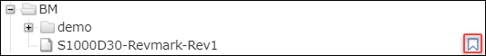
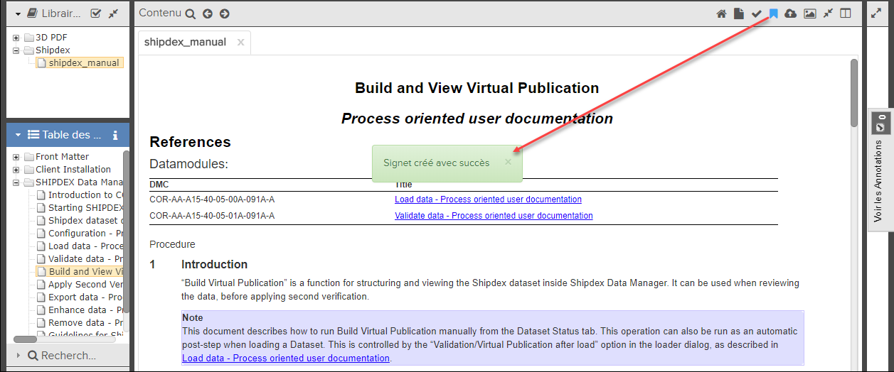
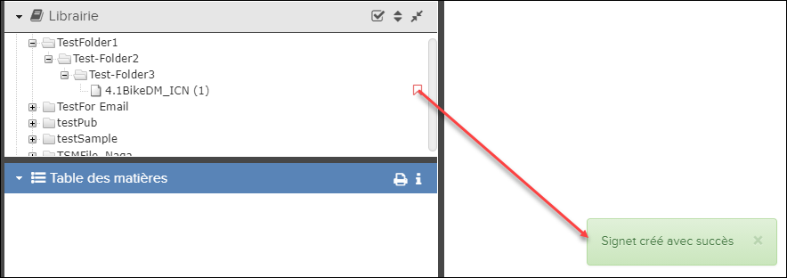
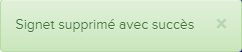
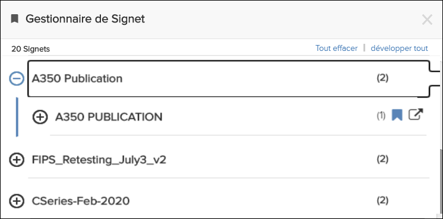

Les listes de signets sont des liens qui vous permettent de revenir facilement aux
documents que vous souhaitez afficher plus tard. Dans Pinpoint, vous pouvez créer des
signets au niveau du module de données depuis le volet
Contenu ou au
niveau de la publication depuis le volet
Bibliothèque. Vous pouvez
également créer des signets pour les publications de liens symboliques.
Il n'est pas possible d'ajouter du contenu à un signet dans un module de
données ou une publication. Les signets sont privés et ne peuvent être vus que par
l'utilisateur qui les a créés. Cependant, ils sont stockés sur le serveur, ce qui signifie
qu'un utilisateur peut accéder à des signets précédemment stockés à partir d'ordinateurs
différents.
Remarque : Les
signets de niveau publication ne sont pas pris en charge pour les publications ATA.
L'icône
 Ajouter un signet
Ajouter un signet n'apparaîtra pas dans la page
Bibliothèque pour ce type de
publication.
Remarque : Cette fonctionnalité n'est pas disponible pour
les publications
HTML.
Les signets résolvent toujours à la dernière révision. Lorsqu'une révision est publiée et
publiée, les signets existants lancent le contenu vers la nouvelle révision. Si vous
souhaitez afficher l'ancienne révision, vous devez sélectionner cette révision.
Remarque : La fonction de signet est activée par défaut, mais il est possible de la cacher en
supprimant ou en laissant le paramètre "bookmarkService" vide dans le fichier
pp.app.conf.json dans le répertoire de configuration.
Si la fonction de signet est activée, vous verrez une icône de signet dans le volet
Contenu de l'application et lorsque vous survolez le nom d'une
publication dans le volet Bibliothèque:
Icône de signet - Volet de Contenu

Icône de signet - Volet Bibliothèque
Gérer les signets
Les signets sont créés et supprimés dans le contexte du document ou de la publication que
vous consultez. Dans l’en-tête de
Contenu, vous verrez un bouton de
Liste de signet.
- Dans le volet Contenu, vous verrez une icône de bascule Signet.
- Dans le volet Bibliothèque, vous verrez une icône de bascule Signet lorsque vous
survolez un nom de publication.
Pour marquer le document que vous consultez, cliquez simplement sur ce bouton. Le bouton du
signet change de couleur et une boîte de dialogue de confirmation s'affiche à l'écran pour
vous informer que le signet est créé.

Message de confirmation du signet créé avec succès (volet de Contenu)

Message de confirmation du signet créé avec succès (volet Bibliothèque)
Pour supprimer le signet, cliquez à nouveau sur le icône. Une boîte de dialogue affiche
pour indiquer que la signet est supprimé et que la couleur du icône change à nouveau.

Accès/gestion de signets dans le gestionnaire de
signets
Cliquez sur l'icône de signet dans la barre d'actions pour ouvrir la boîte de
dialogue
Gestionnaire de signets, qui contient la liste de tous les
publications comportant des signets.
Remarque : L’icône Signet peut être située dans le menu
déroulant
 Autres actions
Autres actions si la largeur de votre page est inférieure à ou égal à
1280 pixels.

Boîte de dialogue Gestionnaire de signets
Sélectionnez pour afficher les signets de tous les publications.
Vous pouvez sélectionner l’icône pour n’afficher que
les favoris pour cette publications.
Sélectionnez pour
masquer les signets de tous les publications. Vous pouvez sélectionner l'icône pour réduire uniquement les signets pour cette
publication.
Les signets créés au niveau de la publication ont une icône Ouvrir dans un nouveau située à droite de l'icône de signet.
Cliquez sur cette icône pour ouvrir la publication dans une nouvelle fenêtre.
Remarque : Lorsque
vous cliquez sur un signet pour une publication de lien symbolique, la publication
d'origine (cible) s'ouvre.
Le nombre total de signets s'affiche sous le nom de
la boîte de dialogue
Gestionnaire de signets. Le nombre de signets dans
chaque publication est indiqué entre parenthèses dans le côté droit de la boîte de dialogue.
Cliquez sur un lien pour ouvrir un document dans la sous-fenêtre
Contenu.
Remarque : Si vous survolez le nom de la publication, le chemin où se trouve le document
apparaît.
Si vous souhaitez supprimer un signet, cliquez sur l'icône dans la partie droite de la boîte de dialogue. Le signet change
de couleur et un message de confirmation clignote à l'écran pour indiquer que le signet est
supprimé. Par exemple: